Якщо коротко - це повільне вбивство, CIDT, руйнування пам'яті та всієї системи розпізнавання та обробки паттернів, основи роботи мозку та вашого я (збій усіх функцій організму), якщо хтось із поліції, мафії, служби безпеки чи армії починає опромінювати вас щодня - ЕМП фізично пошкоджує мозок та нейрони. системні та голосові маніпуляції в полях знищюють ваш розум, і злочинці перешкоджають вашим спробам отримати допомогу правозахисних органів. У нас є багато людей, як хтось Конєв, Рибалко, Рябчевський, Чуніхіна, Гурін, Федоренко, частина саєнтологів, якісь армійські злочинці, які мають відношення до саєнтології чи піратства та інші, які хочуть зберегти цей статус-кво.
чому:
Зображення, з nlm, зі схематичним зображенням можливих біологічних ефектів:
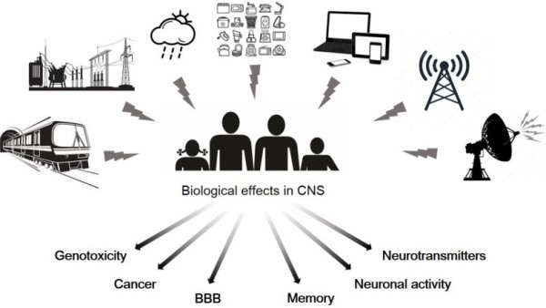ГЕБ - гематоенцефалічний бар'єр.

Частина спектру мобільного широкосмугового зв'язку GSM і нижче може бути використана для створення процесу «нейродегенерації» для «непотрібних» людей.
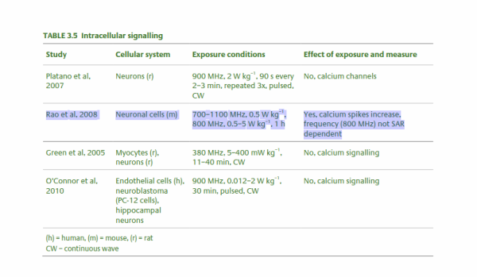І пригнічують активність нейронів або пошкоджують функції організму.
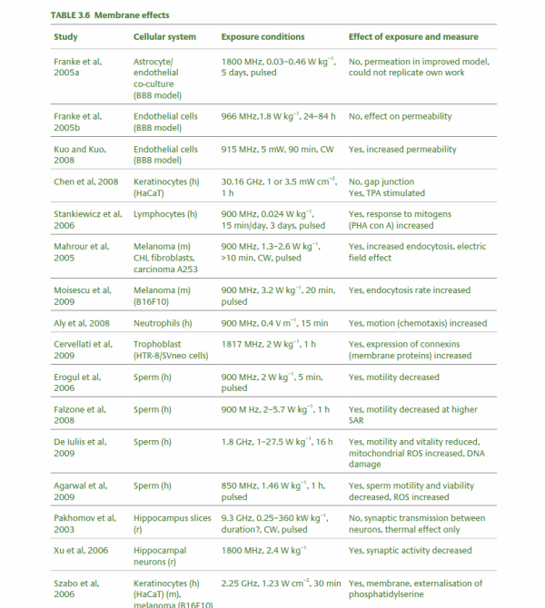Таблиці з RCE-20_Health_Effects_RF_Electromagnetic_fields
«Вплив мікрохвильового випромінювання на морфологію головного мозку»
Центральна нервова система, особливо гіпокамп, дуже чутлива до мікрохвильового випромінювання [43, 44]. Попередні дослідження показали, що у неекспонованих контрольних щурів нейрони гіпокампу вирівнюються в акуратні ряди, у яких краї чіткі, ядра чіткі, ядерця можна спостерігати, а пірамідні клітини не демонструють явного некрозу. Однак у щурів, які отримували тривале опромінення, нейрони виявляють набряк і розташовані нерегулярно. Спостерігаються також ядерний пікноз і закупорка капілярів.
Що стосується ультраструктури гіпокампу, спостерігалися такі симптоми, як атрофія нейронів, набряк мітохондрій, зменшення гребеня та невпорядковане розташування, грубий ендоплазматичний ретикулум демонстрував кістозне розширення, кількість синаптичних везикул зменшилася, а синаптична щілина була розширена (2,45 ГГц). імпульсне мікрохвильове поле із середньою щільністю потужності 1 мВт/см2 протягом 3 год/добу протягом до 30 днів [45] і середньою щільністю потужності 2,5, 5 або 10 мВт/см2 протягом 6 хв/добу до 1 місяць призвело до середнього розрахованого SAR 1,05, 2,1 і 4,2 Вт/кг відповідно [46]). Гіпокамп відіграє важливу роль у навчанні та пам’яті, і результати цих досліджень свідчать про те, що дефіцит функцій навчання та пам’яті, які спостерігаються після впливу мікрохвильового опромінення, може бути наслідком аномалій, індукованих у структурах гіпокампу.
Епідеміологія з військово-медичних досліджень
Промислове опромінення
У довгострокових епідеміологічних дослідженнях великої кількості населення, що зазнало професійного впливу, результати не були послідовними. Дасдаг та ін. [16] досліджували працівників, які працювали на телевізійній передавальній станції з діапазоном частот між 202 і 209 МГц, 694–701 МГц, 750–757 МГц або 774–781 МГц, а також на станції радіомовлення на середніх хвилях. Їхні відповіді на анкети показали, що працівники страждали від таких симптомів, як головний біль, втома, стрес і безсоння. Більшість робітників одужали, покинувши джерело мікрохвильового випромінювання. Крім того, інше дослідження показало, що значні психіатричні симптоми спостерігалися у людей, які працювали в цих областях. Зокрема, повідомлялося про соматизацію, обсесивно-компульсивність, параноїдальні ідеї та психотизм [17].
Військове опромінення
Стандартні пристрої, які використовуються військовослужбовцями та можуть становити електромагнітну небезпеку, включають радари та ракетні системи. У звіті Департаменту мікрохвильової безпеки Польщі було проаналізовано професійний вплив електромагнітних полів на робоче середовище персоналу 204 пристроїв, розділених на 5 груп (радари зенітних ракетних систем, літаки та гелікоптери, пристрої зв’язку, спостереження та висотомірні радари, радари аеропортів і радіонавігаційні системи). У 57% випадках використання пристроїв в військових підрозділах польські солдати працюють в професійно захищених зонах. У 35% випадків військовослужбовці працюють у проміжній і небезпечній зонах і в 22% — тільки в проміжній. У 43% пристроїв військовослужбовці не піддаються впливу електромагнітного поля.
Час зорової реакції та короткочасну пам’ять здорових працівників чоловічої та жіночої статі на радіолокаційній ділянці з частотним діапазоном 2–18 ГГц реєстрували за допомогою простого сліпого тесту часу зорової реакції за допомогою комп’ютера або модифікованого тесту шкали пам’яті Векслера. Результати показали, що радіолокаційне мікрохвильове випромінювання призводить до зменшення часу реакції та зниження продуктивності короткочасної пам’яті [18]. Серед працівників радіолокаторів, які опромінювалися мікрохвилями 14–18 ГГц, були викликані соматична тривога та безсоння, соціальні дисфункції та важка депресія [19]. Сінгх та ін. [20] розділили працівників радіолокації на три групи: контрольна група (n = 68), група впливу I (n = 40, опромінення 8–12 ГГц) та група опромінення II (n = 58, робота з радаром при 12,5–18,0). ГГц). Три групи були далі розділені на дві групи відповідно до їхнього стажу роботи (до 10 років і >10 років), щоб дослідити вплив років впливу радара. Були оцінені рівні мелатоніну та серотоніну, які відіграють важливу роль у нервовій системі. Результати продемонстрували здатність електричного магнітного поля (ЕМП) впливати на концентрацію мелатоніну та серотоніну в плазмі у працівників радарів. Результати були значущими для діапазону 12,5–18,0 ГГц із терміном служби понад 10 років. Крім того, люди, які піддавалися впливу військових мікрохвильових джерел, були більш уразливими до пухлин мозку. Ріхтер та ін. [21, 22] виявили вищу захворюваність на рак головного мозку у працівників радіолокаторів і скорочений інкубаційний період (тобто менше 10 років). Szmigielski [23] зібрав ретроспективні дані для польських солдатів за 15 років і показав, що поширеність раку мозку була вищою в кожній віковій групі.
Вплив мікрохвильового випромінювання на дітей
Оскільки нервова система дитини росте, а її голова стає більш вразливою до енергії випромінювання, були проведені дослідження, які спеціально стосувалися того, чи є нервова система дітей більш сприйнятливою до електромагнітного випромінювання. Однак існує мало наукових доказів того, що діти більш чутливі до електромагнітного випромінювання, ніж дорослі [24, 25].
Ми розглядаємо діапазони мікрохвильових частот і довжин хвиль від 300 МГц (1 м) до 10 ГГц (3 см) у повітрі, де доступні мікрохвильові джерела, когерентні на коротких масштабах часу (тобто 50 мкс). Діелектрична проникність і провідність білої та сірої речовини мозку показані на малюнку 1 (20). На рисунку 2 показано глибину тканини мозку, де мікрохвильова енергія становить ~1/2,7 падаючої енергії. Зауважте, що довжини мікрохвиль у повітрі та мозковій тканині є функціями мікрохвильової частоти. Довжина хвиль мікрохвиль у тканині мозку коливається від 0,5 до 18 см з глибиною ослаблення 1/2,7 0,2–4 см.
На рисунку показано, що мікрохвильове випромінювання 0,3–10 ГГц проникає в тканину головного мозку на відстані від кількох см до кількох мм:
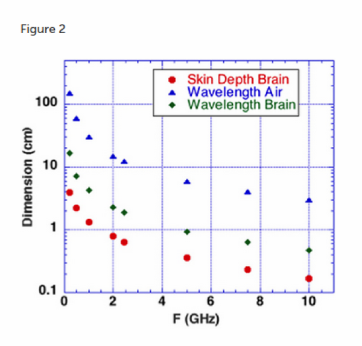У 1993 році EMF зброя або вплив також вбивають, CIDT:
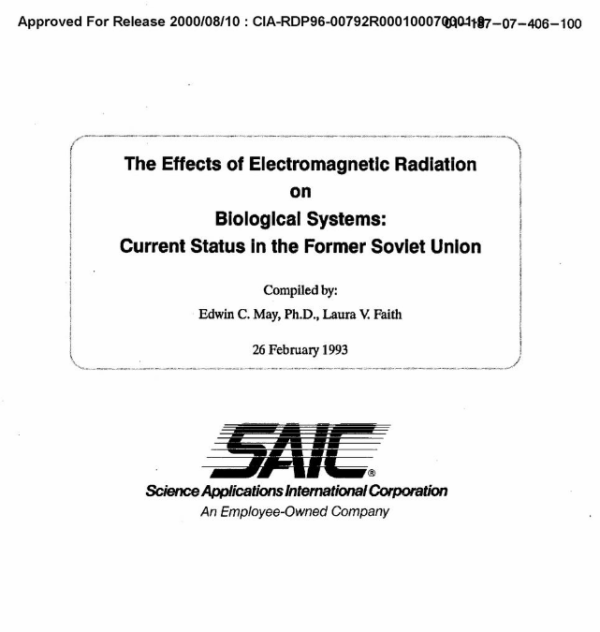 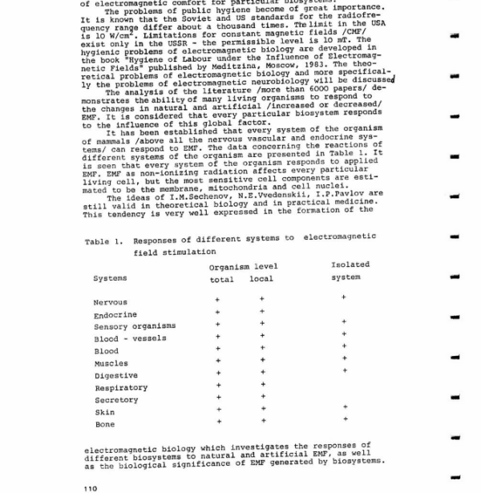 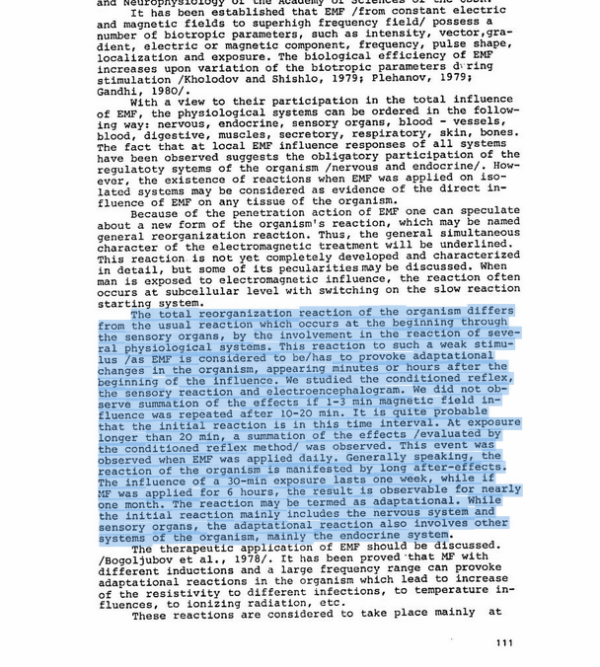 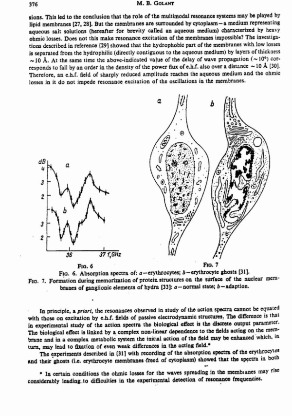 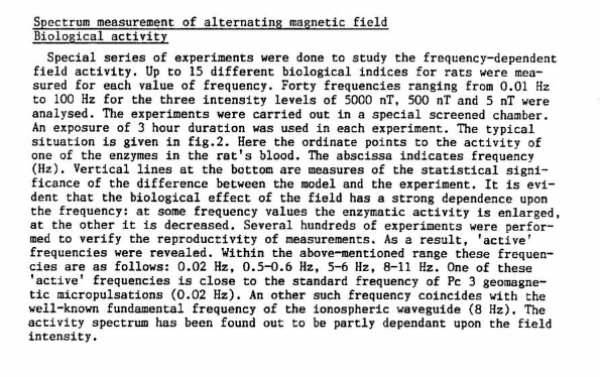 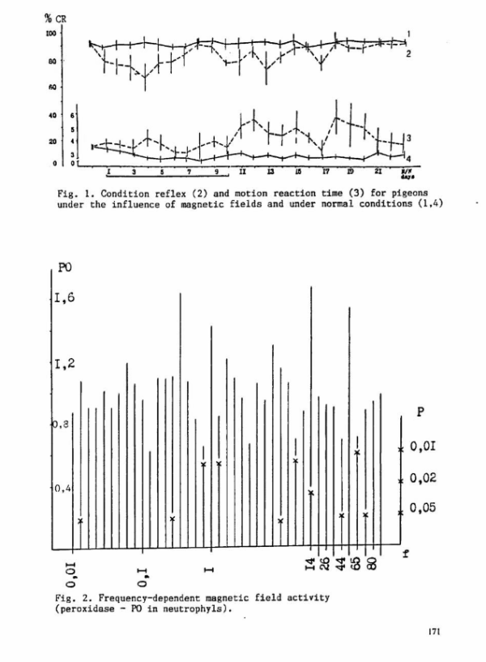 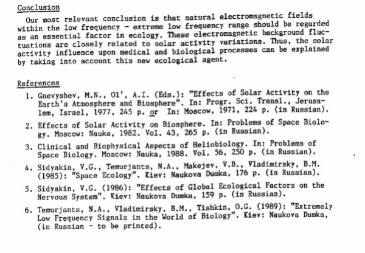Resources
https://mmrjournal.biomedcentral.com/articles/10.1186/s40779-017-0139-0
https://www.ncbi.nlm.nih.gov/pmc/articles/PMC6513191/
https://onlinelibrary.wiley.com/doi/10.1002/bem.22338
https://www.ncbi.nlm.nih.gov/pmc/articles/PMC6015645/
https://onlinelibrary.wiley.com/doi/epdf/10.1002/bem.22310
https://www.nationalgeographic.com/science/article/electromagnetic-noise-disrupts-bird-compass